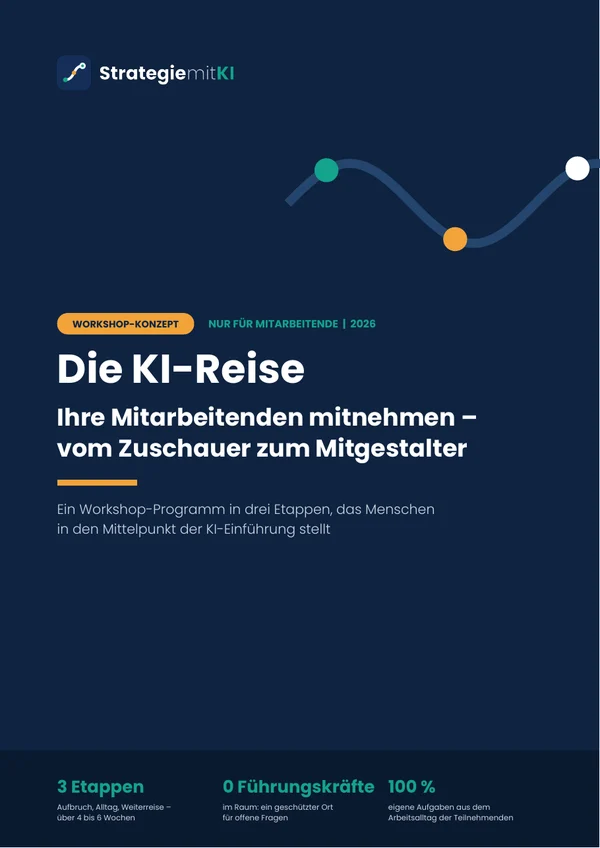

Ein Partner. Ein Plan. Machen.
Wo schafft KI in Ihrem Unternehmen wirklich Wert?
StrategiemitKI zeigt mittelständischen Unternehmen, welche KI-Anwendungsfälle sich wirklich lohnen – und welche Prozesse, Daten und Voraussetzungen dafür notwendig sind.
Fünf Whitepaper kostenlos, ohne Anmeldung.
der Unternehmen ab 20 Beschäftigten setzen 2026 KI ein – ein Jahr zuvor waren es 36 %.
Bitkom Research, September 2026der KI-Anwender schöpfen das Potenzial nach eigener Aussage überhaupt nicht aus.
Bitkom Research, September 2026der mittleren Unternehmen nutzen KI – bei großen Unternehmen sind es 57 %.
Statistisches Bundesamt, IKT-Erhebung 2025So arbeiten wir
Vier Schritte vom Bauchgefühl zum Plan
Verstehen
Mit den Whitepapern wissen, worauf es ankommt.
Standort bestimmen
Mit der KI-Anamnese sehen, wo Sie wirklich stehen.
Plan entwickeln
In der Standortbestimmung Ihren 90-Tage-Fahrplan erarbeiten.
Menschen mitnehmen
Auf der KI-Reise machen Ihre Mitarbeitenden den Plan zu ihrem eigenen.
Wissen
Die Whitepaper-Reihe „KI im Mittelstand“
Sechs Teile, die aufeinander aufbauen – vom Warum über das Wie bis zu den Menschen. Fünf davon kostenlos zum Download, ohne Anmeldung.
-

Teil 1 · Kostenloses Whitepaper
Warum jetzt der richtige Zeitpunkt ist
Wo der Mittelstand bei KI steht, warum die Größenlücke aufholbar ist und was KI wirklich kostet.
- Aktuelle Zahlen von Bitkom und Destatis
- Fünf Gründe, jetzt zu handeln
- Was der EU AI Act für Sie bedeutet
-

Teil 2 · Kostenloses Whitepaper
In 90 Tagen von der Idee zum ersten Erfolg
Der Praxisleitfaden für den strukturierten Einstieg – vom Selbsttest bis zum ausgewerteten Pilotprojekt.
- KI-Selbsttest mit Auswertung
- Musterrichtlinie, Pilot-Canvas und Checklisten
- Überblick über Fördermittel
-

Teil 3 · Kostenloses Whitepaper
Daten fit machen für KI
Warum Daten über den Erfolg entscheiden – und wie Sie Ihr Fundament Schritt für Schritt legen.
- Dateninventur und Qualitäts-Schnell-Check
- Dokumente und Erfahrungswissen KI-tauglich machen
- DSGVO, Data Act und Zugriffsrechte
-

Teil 4 · Praxis-Handbuch für 4,99 €
Die KI-Prompt-Bibliothek für den Mittelstand
58 fertige Prompts für neun Abteilungen – kopieren, Platzhalter ausfüllen, loslegen.
Mehr zum Handbuch -

Teil 5 · Kostenloses Whitepaper
KI-Agenten & Automatisierung
Was KI-Agenten heute leisten, wo sie sich lohnen – und wie Sie Abläufe sicher automatisieren.
- Vier Stufen vom Assistenten zum Agenten
- Automatisierungs-Check und Kontrollmatrix
- Fünf Schritte zum ersten automatisierten Prozess
-

Teil 6 · Kostenloses Whitepaper
Mensch & KI: Sparringspartner statt Konkurrent
Die ehrliche Antwort auf „Was wird aus uns?“ – und wie Sie KI so einführen, dass Ihr Team mitzieht.
- Was die Forschung wirklich sagt
- Sieben Grundsätze für Führungskräfte
- Leitfaden für die Mitarbeiterversammlung

Für Ihre Belegschaft: „KI und Ihre Arbeit“
Die Kurzfassung zu Teil 6 in verständlicher Sprache – sechs Seiten zum Weitergeben an Ihre Mitarbeitenden.
Kurzfassung herunterladenBessere KI-Ergebnisse ab dem ersten Prompt
Der Unterschied zwischen einem austauschbaren und einem brauchbaren KI-Ergebnis liegt fast immer im Prompt. Das Handbuch liefert fertige Vorlagen für den Alltag im Mittelstand.
- 58 Prompts für Geschäftsführung, Vertrieb, Marketing, Service, Einkauf, Produktion, Personal, Finanzen und Office
- Mit Word-Kopiervorlage – ohne störende Zeilenumbrüche
- Prompt-Formel, Profi-Techniken und Sicherheitshinweise
- Funktioniert mit Copilot, ChatGPT, Claude, Gemini und anderen KI-Assistenten
Bezahlung und Download-Link erhalten Sie über unseren Zahlungsanbieter.
KI-Anamnese: Der Diagnosebogen für Ihr Unternehmen
Drei Führungskräfte, drei Einschätzungen? Mit 64 Aussagen in acht Bereichen bestimmen Sie gemeinsam, wo Ihr Unternehmen bei KI wirklich steht.
- Excel-Datei mit automatischer Auswertung für bis zu vier Personen
- KI-Reifegrad, Netzdiagramm und Ihre drei wichtigsten Handlungsfelder
- 24 konkrete Empfehlungen mit Verweisen auf die Whitepaper-Reihe
- Druckversion für Workshops, mit Team-Vergleich und Maßnahmenplan
Tipp: Bringen Sie Ihre ausgefüllte Anamnese zum Erstgespräch mit – dann starten wir direkt bei Ihren Ergebnissen.
Für Ihre Führungsrunde
KI-Standortbestimmung
In drei bis vier Wochen vom gemeinsamen Bild zum konkreten 90-Tage-Plan: KI-Anamnese, Workshop mit Ihrer Führungsrunde, Ergebnisbericht und Nachgespräch – zum Festpreis.
Kompakt
Diagnose und Empfehlung
- KI-Anamnese für bis zu vier Führungskräfte
- Workshop halbtägig, online
- Top-5-Anwendungsfälle bewertet
- Kompakter Bericht mit 90-Tage-Plan
- Nachgespräch nach 30 Tagen
Intensiv
Diagnose und Pilotplanung
- Alles aus Kompakt, dazu Vorab-Interviews
- Workshop ganztägig bei Ihnen vor Ort
- Anwendungsfälle mit Scoring
- 2 bis 3 Pilotkandidaten mit Pilot-Canvas
- Ausführlicher Bericht
Plus
Intensiv + 30 Tage Begleitung
- Vier wöchentliche Umsetzungstermine
- Entwurf Ihrer KI-Richtlinie
- Basisschulung für Ihre Mitarbeitenden
- Start Ihres ersten Pilotprojekts
- 4 Stunden Support, Abschlussreview
Festpreise gemäß § 19 UStG ohne Umsatzsteuer. Anfahrt im Umkreis von 50 km um Grafschaft inklusive. Nicht enthalten: Softwarelizenzen, Programmierung, Rechtsberatung.
Für Ihre Mitarbeitenden
Die KI-Reise
Strategien werden in der Führungsrunde beschlossen – umgesetzt werden sie von Ihren Mitarbeitenden. Die KI-Reise ist ein Workshop-Programm nur für sie: ein geschützter Raum ohne Führungskräfte, in dem aus Betroffenen Beteiligte werden.

- 1
Modul „Aufbruch“ · 4 Stunden
Verstehen, Sorgen offen besprechen, mit eigenen Aufgaben ausprobieren und Ideen für das Team entwickeln.
- 2
Zwischenetappe · 4 bis 6 Wochen
Tandems, vier kurze Wochenimpulse und eine Sammelstelle für Fragen – damit KI zur Gewohnheit wird.
- 3
Modul „Weiterreise“ · 2 Stunden
Erfahrungen teilen, Hürden lösen, Team-Prompt-Bibliothek aufbauen, KI-Botschafter finden.
Die Stimme der Mitarbeitenden: Nach jedem Modul erhält die Geschäftsführung einen anonymen Bericht mit Sorgen, Wünschen und Ideen – und antwortet innerhalb von zwei Wochen.
Ein Partner. Ein Plan. Machen.
Der Trailer zu StrategiemitKI – am besten mit Ton.
Lassen Sie uns sprechen
Im unverbindlichen Erstgespräch finden wir heraus, wo Ihr Unternehmen steht und welcher Schritt jetzt der richtige ist – am besten mit ausgefüllter KI-Anamnese.
Erstgespräch anfragenEin Partner.
Ein Plan.
Machen.
Tim Riedl · Hubertusweg 7a · 53501 Grafschaft
Häufige Fragen
Kosten die Whitepaper wirklich nichts?
Ja. Die Teile 1, 2, 3, 5 und 6 sowie die Kurzfassung für Mitarbeitende können Sie ohne Anmeldung direkt als PDF herunterladen.
Für wen sind die Angebote gedacht?
Für mittelständische Unternehmen in Deutschland – für Geschäftsführung und Führungskräfte ebenso wie für die Mitarbeitenden. Technisches Vorwissen ist nicht nötig.
Was ist der Unterschied zwischen dem Selbsttest in Teil 2 und der KI-Anamnese?
Der kostenlose Selbsttest gibt mit zehn Fragen eine schnelle Orientierung. Die KI-Anamnese geht mit 64 Aussagen in acht Bereichen deutlich tiefer, wertet automatisch aus, vergleicht die Einschätzungen im Team und liefert konkrete Empfehlungen.
Ist die Umsetzung in der Standortbestimmung enthalten?
In Kompakt und Intensiv erhalten Sie Diagnose und einen umsetzbaren 90-Tage-Plan; die Umsetzung übernehmen Sie selbst. Im Paket Plus begleiten wir Sie die ersten 30 Tage aktiv.
Warum sind bei der KI-Reise keine Führungskräfte dabei?
Offene Fragen brauchen einen geschützten Raum. Die Führung erfährt über den anonymen Bericht „Stimme der Mitarbeitenden“, was ihre Teams bewegt – und antwortet darauf.
Wie aktuell sind die Inhalte?
Alle Unterlagen haben den Stand September 2026, einschließlich der aktuellen Bitkom-Zahlen und der Änderungen am EU AI Act.